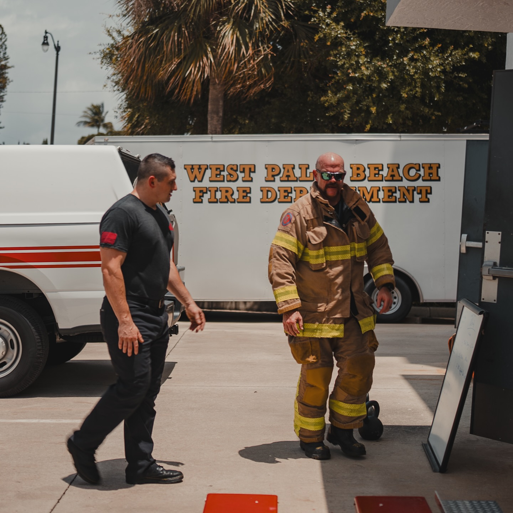

21%
Of property-tax revenue
About 21% of the city’s roughly $149M in FY26 property-tax revenue.
West Palm Beach Firefighters
Firefighters support tax relief for all West Palm Beach homeowners; however, Amendment 3 hurts public safety.
Schools are carved out. Fire, EMS, and police are not protected. West Palm Beach stands to lose $31M+ a year in city property-tax revenue, with no dedicated replacement for the people who answer 911.
Vote No on Amendment 3West Palm Beach Firefighters
Firefighters support tax relief for all West Palm Beach homeowners; however, Amendment 3 hurts public safety. Firefighters urge a No vote on Amendment 3 because the measure shrinks the city’s ability to fund fire, EMS, and police without a real plan to replace that money. A No vote clears the path for real, logical tax reform that can be implemented while protecting public safety.
West Palm Beach impact
Under the 2028 ($250,000 exemption) assumptions, the loss hits the City of West Palm Beach. No dedicated replacement is written in for fire, EMS, or police.
a year in lost City of West Palm Beach property-tax revenue under the 2028 ($250,000 exemption) assumptions
Source: Palm Beach County Property Appraiser figures (released June 2026; reported in the Palm Beach Post city-by-city table). FY26 context: City of West Palm Beach FY26 Budget in Brief.
About 21% of the city’s roughly $149M in FY26 property-tax revenue.
Roughly the City of West Palm Beach property-tax revenue in the FY26 budget.
Property taxes make up about 52.6% of the city’s General Fund, the same fund that pays for West Palm Beach Fire Rescue, EMS, and Police.
The exemption
Amendment 3’s big new homestead exemption applies to non-school taxes. School taxes keep the narrower exemption structure. City millage that funds fire, EMS, and police does not get that carve-out.
School taxes keep the narrower exemption structure.
City millage that funds fire, EMS, and police does not get that carve-out.
Fire Assessment Fee
The Fire Assessment Fee is a separate charge. It helps fund fire services. It does not fully fund EMS or police.
If Amendment 3 cuts $31M+ from city property taxes, pressure will grow to raise other local revenues, including the Fire Assessment Fee, to try to backfill fire costs. That still leaves EMS and police exposed on the General Fund side. Raising a flat or parcel-based fire fee to compensate hits lower-income areas the hardest. Those households get less benefit from a bigger homestead exemption and feel fee increases more.
Today’s Fire Assessment brings in about $8.7M. It cannot backfill a $31M+ ad valorem hit, and it does not cover EMS or police.
About what today’s Fire Assessment brings in. It does not cover EMS or police.
The ad valorem hit the Fire Assessment cannot backfill.
November 2026 ballot
The non-school homestead exemption moves to $150,000 in 2027 and $250,000 in 2028.
The cap on non-homestead assessment growth falls from 10% to 5%.
The changes take effect Jan. 1, 2027, if Amendment 3 is approved on the November 2026 ballot.
FAQ

Vote No on Amendment 3
Firefighters urge a No vote on Amendment 3 so West Palm Beach can pursue real, logical tax reform that still protects funding for fire, EMS, and police. Support tax relief that does not gut the funding base for West Palm Beach fire, EMS, and police. Any tax cut should come with a recurring plan to keep first responders funded, not a scramble to raise Fire Assessment Fees that still leave EMS and police short.
Sources
Revenue figures on this page are for the City of West Palm Beach.